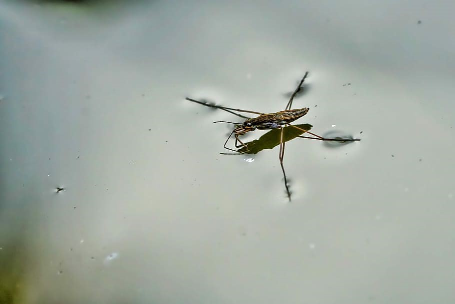
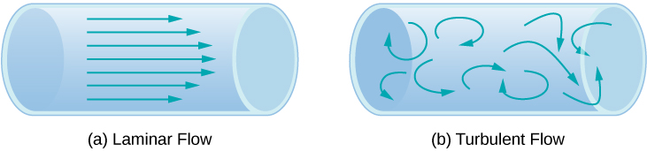
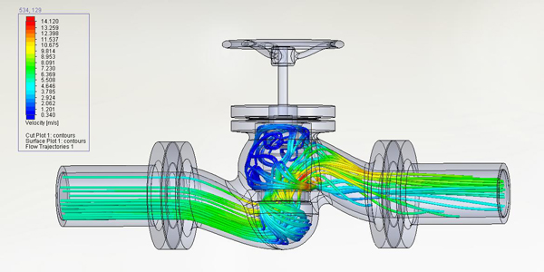
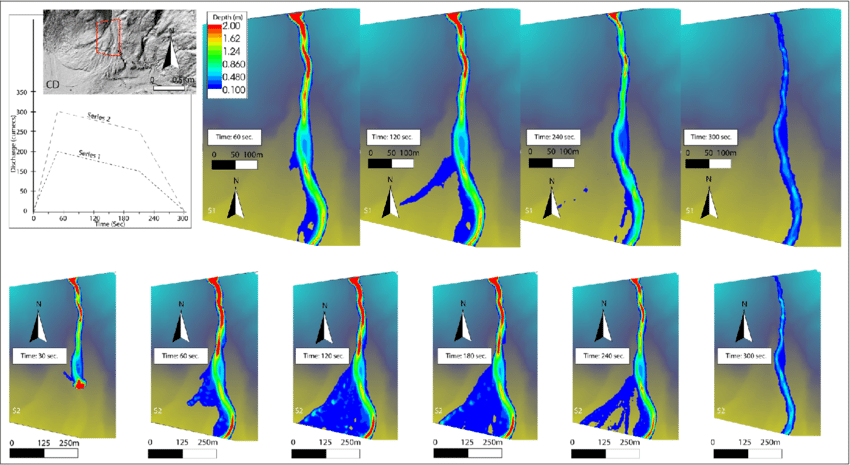
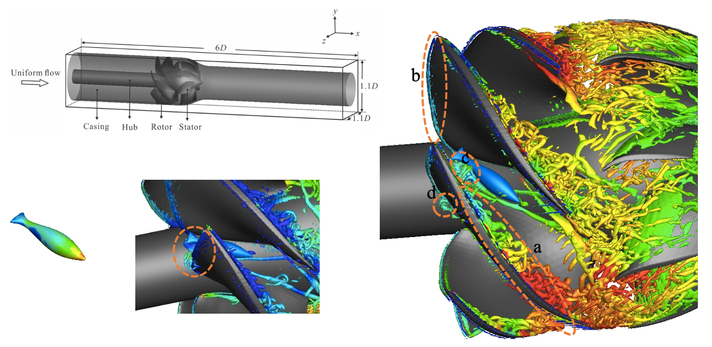
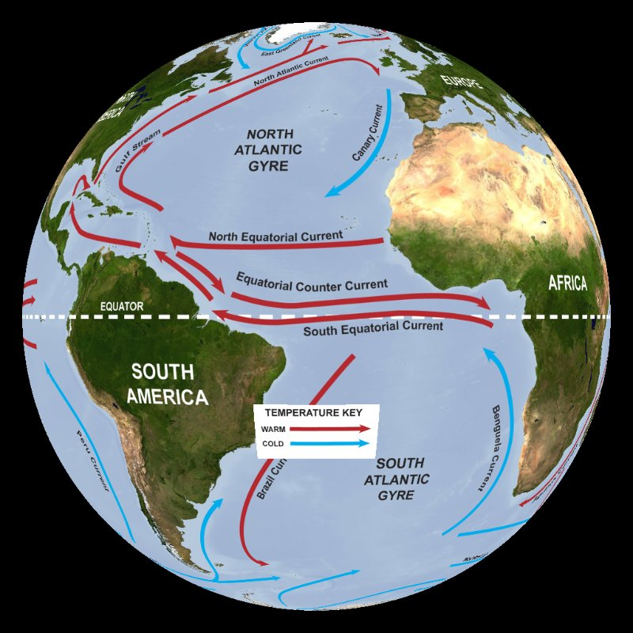
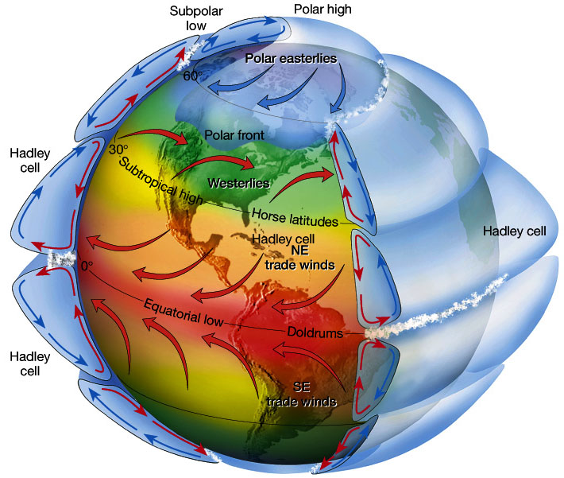
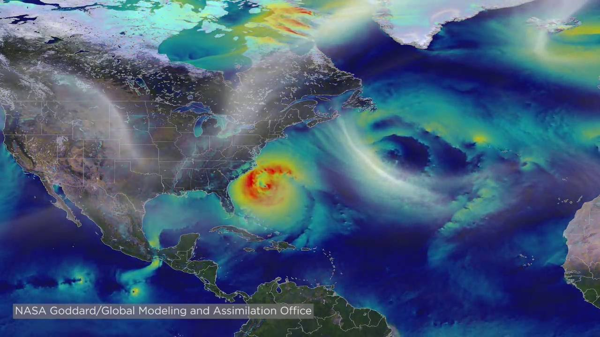
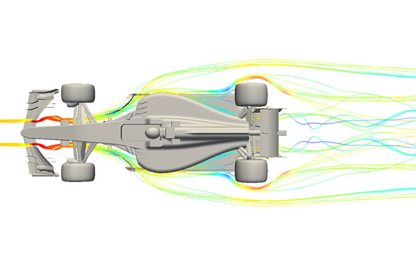

Welcome to the Fluid Mechanics Course Site#
My name is Carlos D. Hoyos, and I am an associate professor at the Universidad Nacional de Colombia, Facultad de Minas, Sede Medellín, Departamento de Geociencias y Medioambiente. I have a Ph.D. in Earth and Atmospheric Sciences from Georgia Institute of Technology, along with a Masters in Oceanic and Atmospheric Sciences, a Masters in Water Resources, and a Civil Engineering degree. My work has taken me through diverse fields—studying the behavior of the atmosphere, understanding water resources, and applying data science to solve problems related to agriculture, energy, risk management, and climate. Fluid dynamics has been a common thread throughout my career, from analyzing atmospheric circulations that drive global climate patterns to modeling river flows that sustain ecosystems and cities. This course gives me the opportunity to share not only the fundamental concepts of fluid mechanics but also some of their applications.
I am committed to building a set of online course materials to complement our in-class lectures. This content is made accessible through Jupyter Books hosted on GitHub, providing you with dynamic, interactive, and up-to-date resources for your studies.
The Importance of Fluid Mechanics#
Fluid mechanics is not just a core subject within engineering; it’s the backbone of many fields that influence our daily lives. It explains how blood circulates in the human body, where advanced simulations of vascular flows are improving medical treatments (Figure 1). It underpins technologies such as fluid flow in pipes (Figure 2), valve and CFD simulations (Figure 3), and mine ventilation systems (Figure 4).
From an engineering perspective, fluid mechanics plays a crucial role in energy systems, where it helps design more efficient turbines, optimize hydraulic systems, and improve aerodynamics in transportation. In renewable energy, it drives advances in hydropower generation (Figure 5), engineering applications of hydropower (Figure 6), and wind turbine rotor simulations (Figure 7). In aerospace, understanding the flow of air over wings is critical to flight (Figure 8).
Fluid Mechanics and Climate Science#
While we often associate fluid mechanics with mechanical and civil engineering, its relevance to climate science cannot be overstated. Fluid behavior in the atmosphere and oceans dictates weather patterns, the distribution of heat and moisture across the planet, and even how pollutants disperse. As the climate changes, fluid mechanics becomes crucial in modeling these evolving dynamics and predicting their impacts on both natural and human systems.
On a global scale, fluid mechanics governs large-scale circulation systems such as river flows (Figure 9), ocean currents (Figure 10), atmospheric circulation (Figure 11), and even hurricanes (Figure 12). These systems, in turn, shape local weather patterns, long-term climate trends, and critical sectors such as agriculture, ecosystems, and energy generation.
For example, wind energy relies directly on our ability to model how air moves across landscapes (Figure 7). In solar energy, fluid dynamics improves the cooling systems of solar panels and optimizes the airflow across large solar farms. Moreover, climate resilience—a pressing issue as we face more extreme weather events—benefits directly from fluid mechanics through flood control, stormwater management, and the prediction of hurricane or typhoon dynamics.
Small-Scale Applications: From Biomedical Engineering to Household Technologies#
While climate science deals with global fluid systems, the principles of fluid mechanics also apply at much smaller scales. Biomedical engineering is a field that deeply integrates fluid dynamics to design medical devices, simulate blood flow, and develop life-saving technologies. Engineers use fluid mechanics to understand how the heart pumps blood, how artificial valves can mimic natural flow, and how drugs can be delivered through targeted microfluidic channels (Figure 1).
Even in everyday household technologies, fluid mechanics plays a role—whether it’s the way a showerhead disperses water efficiently, how a vacuum cleaner generates suction, or how surface tension (Figure 13) shapes the behavior of water droplets. These seemingly simple systems are based on the same complex principles we study in this course.
Beyond Engineering: Sports and Performance#
Fluid mechanics even reaches into sports and performance, such as optimizing aerodynamics in motorsport (Figure 14). Athletes, race car engineers, and designers alike benefit from fluid dynamic principles to reduce drag, increase efficiency, and enhance performance.
Ultimately, understanding fluid mechanics empowers us to address challenges at every scale—from global circulation systems that shape climate, to engineering innovations that drive renewable energy, to microscale biomedical devices that save lives. It is a universal toolkit for solving problems that connect physics, engineering, the environment, and human health.

Source: University of Leeds – Surface tension

Source: University of Central Florida – University Physics Volume 2, “Fluid Dynamics”

Source: Savener – Expands its expertise in fluid dynamics (CFD)

Source: SpringerOpen – Progress in Earth and Planetary Science, “Title of the Article”

Source: U.S. Geological Survey – Flow of water produces hydroelectricity

Source: University of Minnesota – Fluids Research Group, Hydropower

Source: NOAA Science On a Sphere – Ocean circulation (labeled currents)

Source: Royal Meteorological Society – Global atmospheric circulation

Source: NASA GPM – The Art of Creating Digital Hurricanes

Source: MDPI – Energies, “Title of the Article”

Source: Racecar Engineering – Fluid dynamics in motorsport
Why Jupyter Books?#
Jupyter Books provide a unique platform for integrating live code, dynamic visualizations, and interactive examples directly into our course materials. This allows us to break down complex concepts and equations in real-time, giving you the opportunity to not only read but also engage with the material. Imagine being able to run a simulation of a fluid system while learning the theory behind it, or exploring interactive visualizations that help you better grasp the forces at play in different fluid scenarios.
The flexibility of Jupyter Books makes them an ideal medium for fluid mechanics, a subject that often requires hands-on analysis and computational tools to fully understand. As we progress through the course, I encourage you to experiment with the code and simulations provided in these materials to deepen your learning. You can learn about Jupyter Books at jupyterbook.org.
Why GitHub?#
By hosting these materials on GitHub, I’m inviting you into a collaborative learning environment. Version control on GitHub ensures that the materials are always up to date, and it offers an opportunity for you to suggest improvements, raise issues, and even contribute to new content. This platform promotes transparency, community-driven learning, and continuous improvement—values that are essential in both academia and engineering practice.
If you don’t already have a GitHub account, I recommend creating one, as it will be useful not only for this course but also for future projects and collaborations in your career.
Why the Notes in English?#
Although this course is taught in Spanish, the course notes are provided in English to help you get comfortable with the technical terminology that dominates international literature, research, and professional work in fluid mechanics. Many of the key resources—such as academic papers, research articles, and advanced textbooks—are published in English, and mastering this language will help you stay connected with the global scientific community.
By engaging with the material in English, you’ll be better prepared to attend international conferences, contribute to global research efforts, and work with colleagues from around the world. It’s an investment that will expand your opportunities both academically and professionally.
Foundations (Weeks 1–3)
Statics (Week 4)
Core Equations (Weeks 5–6)
Course Operations & Resources
List of Figures#
Figure 1. Blood flow simulation – Source: University of Manchester
Figure 2. Fluid flow in pipes – Source: University of Central Florida – University Physics Volume 2
Figure 3. Valve and CFD simulation – Source: Savener
Figure 4. Mine ventilation and energy – Source: MDPI – Energies
Figure 5. Hydropower generation – Source: U.S. Geological Survey
Figure 6. Hydropower applications – Source: University of Minnesota – Fluids Research Group
Figure 7. Wind energy simulation – Source: Wiley Online Library – Wind Energy
Figure 8. Aircraft wing airflow – Source: Embry-Riddle Aeronautical University
Figure 9. River flows – Source: SpringerOpen – Progress in Earth and Planetary Science
Figure 10. Ocean circulation currents – Source: NOAA Science On a Sphere
Figure 11. Global atmospheric circulation – Source: Royal Meteorological Society
Figure 12. Digital hurricane visualization – Source: NASA GPM
Figure 13. Surface tension – Source: University of Leeds
Figure 14. Fluid dynamics in motorsport – Source: Racecar Engineering